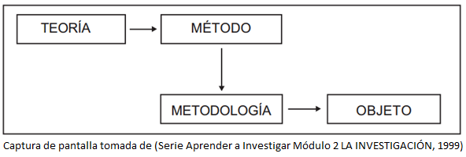

El método científico es un procedimiento para descubrir las condiciones en que se presentan sucesos específicos, caracterizado generalmente por ser tentativo, verificable, de razonamiento riguroso y observación empírica.
Entendemos por método un orden o procedimiento, a partir de la lógica del pensamiento científico que surge de la teoría. Teoría y método van siempre juntos, mientras que la metodología es la parte instrumental de la investigación, y como tal lleva al objeto de investigación. (TAMAYO Y TAMAYO, 1999)

TAMAYO Y TAMAYO, M. (1999). Serie Aprender a Investigar Módulo 2 LA INVESTIGACIÓN (Vol. 2). Santa Fe de Bogotá: ARFO EDITORES LTDA.